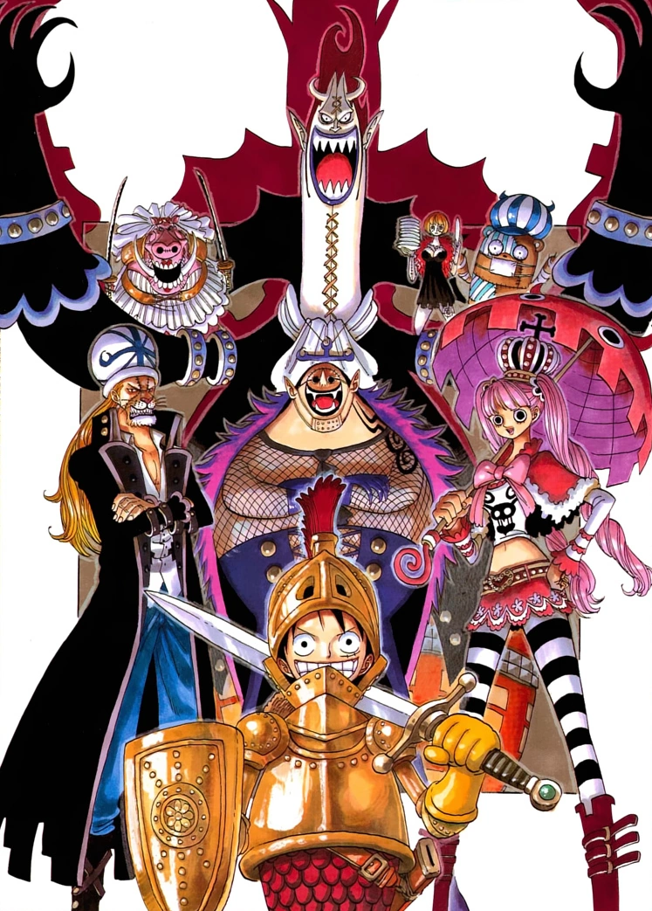
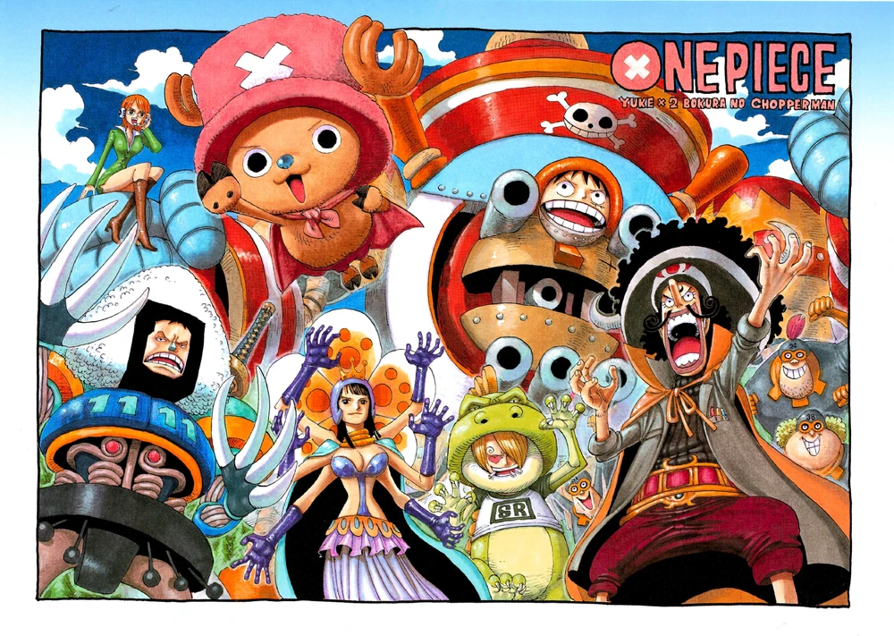
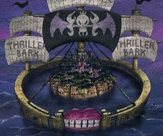

Thriller Bark Saga

Ice Hunter Arc

Chopper Man Special Arc

Arc spesial ini berfokus pada Chopper yang bertransformasi menjadi pahlawan super
bernama Chopper Man. Dalam petualangan ini, ia berusaha untuk menyelamatkan
teman-temannya dengan gaya yang konyol dan lucu. Meskipun bukan bagian dari alur
utama, arc ini memberikan nuansa humor dan menunjukkan karakter Chopper dengan cara
yang berbeda.
Episode: 336
Special Episodes
Thriller Bark Arc

Kru Topi Jerami tiba di Thriller Bark, sebuah pulau misterius yang terjebak dalam
kegelapan dan dihuni oleh zombie. Di sini, mereka menghadapi Gecko Moriah, salah
satu Shichibukai yang memiliki kekuatan untuk mencuri bayangan orang. Pertarungan
epik terjadi, di mana Luffy dan kru melawan pasukan zombie Moriah. Selain itu,
mereka juga bertemu dengan Brook, seorang musisi tengkorak yang memiliki sejarah
sendiri. Setelah mengalahkan Moriah, Brook bergabung dengan Kru Topi Jerami sebagai
anggota baru.
Episode: 337-381
Spa Island Arc